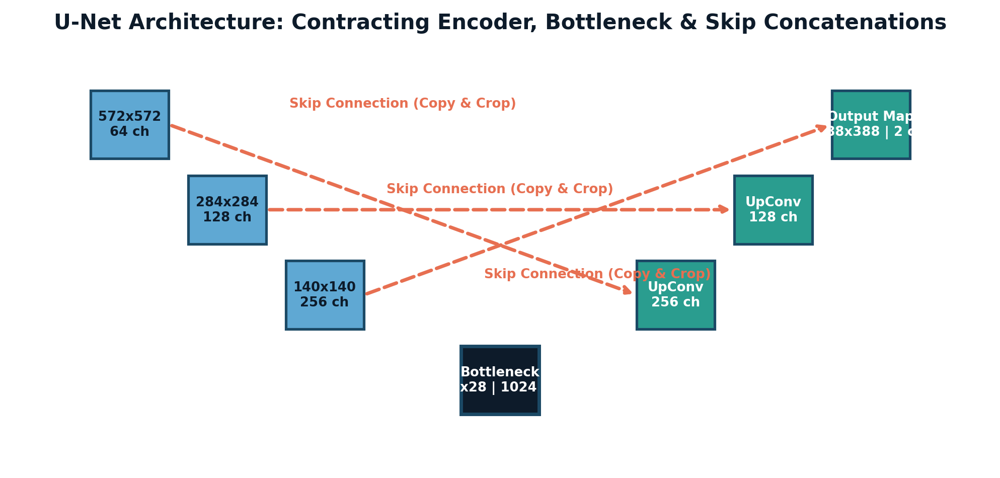

"In clinical medicine, an error is not a misclassified label. An error is surgical margin misestimation or radiation delivered to healthy brain tissue rather than an infiltrative glioblastoma boundary."

Figure 4.2.1: The U-Net encoder-decoder architecture. The contracting left path extracts high-level semantic context, the central bottleneck captures latent representations, and the expansive right path recovers spatial resolution, assisted by horizontal copy-and-crop skip connections.
— Clinical AI Maxim
In standard image classification, a convolutional network contracts a $512 \times 512$ image down to a single categorical scalar $y \in \{0, 1, \dots, C-1\}$. In Semantic Segmentation, the objective is dense pixel-by-pixel classification: the model must generate an output mask of the exact same spatial resolution ($512 \times 512$), assigning every coordinate $(i, j)$ an anatomical class label (e.g. background, healthy myocardium, or ischemic infarction).
Standard bounding-box object detection (e.g. YOLO, Faster R-CNN) is clinically inadequate in oncology: malignant tumors have irregular, spicular, non-convex contours. Radiotherapists require pixel-precise delineations to program multi-leaf collimators on linear accelerators with sub-millimeter margins.
Invented by Olaf Ronneberger, Philipp Fischer, and Thomas Brox for biomedical microscopy, U-Net has become the foundational backbone of dense medical imaging. The architecture forms a symmetric "U" shape comprising three functional components:
Successive stages of two $3 \times 3$ convolutions followed by $2 \times 2$ Max Pooling with stride $S=2$. At each downsampling level, spatial resolution is halved while feature channel depth doubles ($64 \to 128 \to 256 \to 512$), extracting abstract, high-level semantic context ("What pathology is present?").
The lowest topological tier (e.g. $1024$ channels at $1/16$ or $1/32$ resolution), encapsulating global spatial context with maximum receptive field coverage.
Upsamples feature maps via Transposed Convolutions ($2 \times 2$ up-conv) or bilinear interpolation. However, upsampling alone produces blurry, geographically imprecise boundaries because high-frequency spatial coordinate details were discarded by the encoder's max-pooling operations!
The Core Innovation: Skip Concatenation Highway
At every resolution level, U-Net copies high-resolution feature maps directly from the contracting encoder across to the expanding decoder, concatenating them along the channel dimension:
The decoder receives both broad semantic context ("this general lobe contains a tumor") AND pristine, unpooled spatial localization ("the exact lesion membrane passes through coordinate $(x, y)$"), enabling sub-pixel contour fidelity!
To restore high spatial resolution, decoders employ Transposed Convolutions (often colloquially termed fractionally strided convolutions or "deconvolutions").
Given input dimension $W_{\text{in}}$, kernel size $K$, stride $S$, padding $P$, output padding $P_{\text{out}}$, and dilation $D$:
$$W_{\text{out}} = (W_{\text{in}} - 1) \cdot S - 2P + D(K - 1) + P_{\text{out}} + 1$$When the kernel size $K$ is not an exact integer multiple of stride $S$ (e.g., $K = 3$ with stride $S = 2$), adjacent receptive fields overlap unevenly. Certain output pixels receive contributions from two overlapping kernel positions, while adjacent pixels receive contributions from only one! This creates a high-frequency checkerboard artifact pattern across the predicted mask.
The Production Remedy: Modern architectures (Odena et al., 2016) replace transposed convolutions with Nearest-Neighbor or Bilinear Upsampling followed by a standard $3 \times 3$ Convolution, completely eliminating checkerboard artifacts with zero compute penalty!
In medical CT and MRI scans, pathological lesions (e.g. brain metastases or micro-aneurysms) often comprise less than $0.1\%$ of total image voxels. Evaluating standard Binary Cross-Entropy (BCE) loss on such data is catastrophic:
$$\mathcal{L}_{\text{BCE}} = -\frac{1}{N} \sum_{i=1}^N \left[ y_i \ln(p_i) + (1 - y_i) \ln(1 - p_i) \right]$$A trivial model that predicts background ($p_i = 0$) for every single pixel achieves $99.9\%$ accuracy while completely missing the patient's malignant lesion!
To evaluate foreground overlap independent of background volume, we compute the Dice Similarity Coefficient (DSC) and Intersection-over-Union (IoU / Jaccard):
$$\text{Dice} = \frac{2 |P \cap Y|}{|P| + |Y|} = \frac{2 \text{TP}}{2 \text{TP} + \text{FP} + \text{FN}}$$ $$\text{IoU} = \frac{|P \cap Y|}{|P \cup Y|} = \frac{\text{TP}}{\text{TP} + \text{FP} + \text{FN}}$$They satisfy the strict algebraic equivalence:
$$\text{Dice} = \frac{2 \text{IoU}}{1 + \text{IoU}} \iff \text{IoU} = \frac{\text{Dice}}{2 - \text{Dice}}$$Notice: True Negatives (TN) are completely absent from both formulas! The score evaluates only foreground overlap, making it immune to massive background dominance.
To train neural networks via backpropagation, we formulate the continuous Soft Dice Loss over continuous sigmoid output probabilities $p_i \in [0, 1]$:
$$\mathcal{L}_{\text{Dice}} = 1 - \frac{2 \sum_{i=1}^N p_i y_i + \epsilon}{\sum_{i=1}^N p_i + \sum_{i=1}^N y_i + \epsilon}$$where $\epsilon > 0$ is a Laplace smoothing constant (typically $10^{-5}$) that prevents division by zero and stabilizes gradient descent when both prediction and ground truth are empty ($|P| = |Y| = 0$).
QUESTION (Analytical Gradient Derivation of Soft Dice Loss): Let the Soft Dice Loss over $N$ pixels be defined as:
$$\mathcal{L}_{\text{Dice}} = 1 - \frac{2 \sum_{i=1}^N p_i y_i + \epsilon}{\sum_{i=1}^N p_i + \sum_{i=1}^N y_i + \epsilon}$$where $p_i \in [0, 1]$ is the predicted probability and $y_i \in \{0, 1\}$ is the ground-truth binary label for pixel $i$.
Step 1: Application of Quotient Rule: Define numerator $U$ and denominator $V$: $$U = 2 \sum_{i=1}^N p_i y_i + \epsilon, \quad V = \sum_{i=1}^N p_i + \sum_{i=1}^N y_i + \epsilon$$ The loss is: $$\mathcal{L}_{\text{Dice}} = 1 - \frac{U}{V}$$ Differentiating with respect to predicted probability $p_k$: $$\frac{\partial \mathcal{L}_{\text{Dice}}}{\partial p_k} = -\frac{\partial}{\partial p_k}\left(\frac{U}{V}\right) = -\frac{\frac{\partial U}{\partial p_k} V - U \frac{\partial V}{\partial p_k}}{V^2}$$ Evaluating the partial derivatives: $$\frac{\partial U}{\partial p_k} = \frac{\partial}{\partial p_k}\left(2 p_k y_k + \dots\right) = 2 y_k$$ $$\frac{\partial V}{\partial p_k} = \frac{\partial}{\partial p_k}\left(p_k + \dots\right) = 1$$ Substituting these into the quotient rule: $$\frac{\partial \mathcal{L}_{\text{Dice}}}{\partial p_k} = -\frac{2 y_k V - U (1)}{V^2} = \frac{U - 2 y_k V}{V^2}$$ Expanding in terms of the Dice coefficient $\text{DSC} = \frac{U}{V}$: $$\frac{\partial \mathcal{L}_{\text{Dice}}}{\partial p_k} = \frac{U}{V^2} - \frac{2 y_k}{V} = \frac{1}{V} \left[ \frac{U}{V} - 2 y_k \right] = \mathbf{\frac{\text{DSC} - 2 y_k}{\sum_{i=1}^N p_i + \sum_{i=1}^N y_i + \epsilon}} \quad \blacksquare$$
Step 2: Analysis of Gradient Dynamics:
QUESTION (Transposed Convolution Spatial Dimension Sizing Drill): A U-Net decoder receives an encoder bottleneck feature map of spatial size $H_{\text{in}} = 16, W_{\text{in}} = 16$. It passes through three successive Transposed Convolutional layers to reconstruct the segmentation mask:
Calculate the exact spatial dimensions $(H_{\text{out}}, W_{\text{out}})$ after each of the three upsampling stages using the formal transposed convolution output formula:
$$W_{\text{out}} = (W_{\text{in}} - 1) \cdot S - 2P + D(K - 1) + P_{\text{out}} + 1$$Step 1: UpConv1 Sizing ($W_{\text{in}} = 16$): With $K = 4, S = 2, P = 1, D = 1, P_{\text{out}} = 0$: $$W_{\text{out}, 1} = (16 - 1) \times 2 - 2(1) + 1(4 - 1) + 0 + 1$$ $$W_{\text{out}, 1} = (15 \times 2) - 2 + 3 + 0 + 1 = 30 - 2 + 3 + 1 = \mathbf{32 \times 32}$$
Step 2: UpConv2 Sizing ($W_{\text{in}} = 32$): With $K = 3, S = 2, P = 1, D = 1, P_{\text{out}} = 1$: $$W_{\text{out}, 2} = (32 - 1) \times 2 - 2(1) + 1(3 - 1) + 1 + 1$$ $$W_{\text{out}, 2} = (31 \times 2) - 2 + 2 + 1 + 1 = 62 - 2 + 2 + 2 = \mathbf{64 \times 64}$$
Step 3: UpConv3 Sizing ($W_{\text{in}} = 64$): With $K = 4, S = 2, P = 1, D = 1, P_{\text{out}} = 0$: $$W_{\text{out}, 3} = (64 - 1) \times 2 - 2(1) + 1(4 - 1) + 0 + 1$$ $$W_{\text{out}, 3} = (63 \times 2) - 2 + 3 + 0 + 1 = 126 - 2 + 3 + 1 = \mathbf{128 \times 128}$$ Final output mask resolution: $\mathbf{128 \times 128}$, perfectly doubling spatial resolution at each hierarchy tier.
QUESTION (Checkerboard Artifact Mathematical Hand-Trace): Consider upsampling a 1D feature map $\mathbf{x} = [1, 2]$ using two different algorithms to produce an output of size 4:
Step 1: Method A (Transposed Conv $K=3, S=2$): Input: $x_0 = 1, x_1 = 2$. Under stride $S=2$, the input is padded with zeros internally: $\tilde{\mathbf{x}} = [1, 0, 2]$. The transposed convolution places kernel $\mathbf{w} = [1, 1, 1]$ scaled by input values:
Step 2: Method B (Interpolation + Standard Conv): Nearest-neighbor upsampling doubles the input: $$\mathbf{x}_{\text{up}} = [1, 1, 2, 2]$$ Applying standard convolution with $\mathbf{w} = [0.25, 0.5, 0.25]$ and padding $P=1$ (boundary padded with 0): $$\mathbf{x}_{\text{pad}} = [0, 1, 1, 2, 2, 0]$$
Step 3: Root Cause of Checkerboards: Transposed convolution has non-uniform overlap density whenever $K$ is not divisible by $S$. By decoupling the spatial expansion (via bilinear/nearest-neighbor interpolation) from the representation transformation (via standard $3 \times 3$ conv with stride 1), Method B guarantees uniform filter tap density across every spatial coordinate, completely eradicating checkerboard artifacts.
QUESTION (Medical Segmentation Evaluation Suite: Dice, IoU & Relations): A 2D MRI brain scan has a $4 \times 4$ region of interest. The ground-truth tumor mask $\mathbf{Y}$ and model binary prediction mask $\mathbf{P}$ (thresholded at $p \ge 0.5$) are:
$$\mathbf{Y} = \begin{bmatrix} 0 & 0 & 0 & 0 \\ 0 & 1 & 1 & 0 \\ 0 & 1 & 1 & 0 \\ 0 & 0 & 0 & 0 \end{bmatrix}, \quad \mathbf{P} = \begin{bmatrix} 0 & 0 & 0 & 0 \\ 0 & 1 & 1 & 1 \\ 0 & 0 & 1 & 1 \\ 0 & 0 & 0 & 0 \end{bmatrix}$$Step 1: Confusion Matrix Extraction: Total pixels: $N = 4 \times 4 = 16$. Compare entry-by-entry:
Step 2: Core Classification Metrics:
Step 3: Dice & IoU Computation and Equivalence:
QUESTION (Mathematical Proof of Dice and Jaccard Monotonic Equivalence): Let $P, Y \subseteq \Omega$ be non-empty binary masks defined on a discrete spatial grid $\Omega$.
Step 1: Derivation of the Algebraic Equivalence: Let $A = |P \cap Y|$, $B = |P|$, and $C = |Y|$. By the Principle of Inclusion-Exclusion: $$|P \cup Y| = |P| + |Y| - |P \cap Y| = B + C - A$$ By definition: $$\text{DSC} = \frac{2A}{B + C}, \quad J = \frac{A}{B + C - A}$$ From the definition of $\text{DSC}$, we have $B + C = \frac{2A}{\text{DSC}}$. Substitute this expression for $B + C$ into the definition of $J$: $$J = \frac{A}{\frac{2A}{\text{DSC}} - A} = \frac{A}{A\left(\frac{2}{\text{DSC}} - 1\right)} = \frac{1}{\frac{2 - \text{DSC}}{\text{DSC}}} = \mathbf{\frac{\text{DSC}}{2 - \text{DSC}}}$$ Inverting this relation to solve for $\text{DSC}$: $$J(2 - \text{DSC}) = \text{DSC} \implies 2J - J \cdot \text{DSC} = \text{DSC} \implies 2J = \text{DSC}(1 + J) \implies \mathbf{\text{DSC} = \frac{2J}{1 + J}} \quad \blacksquare$$
Step 2: Strict Monotonicity Proof: Consider the function $f(J) = \frac{2J}{1 + J}$ for $J \in [0, 1]$. Taking the first derivative with respect to $J$: $$f'(J) = \frac{d}{dJ}\left(\frac{2J}{1 + J}\right) = \frac{2(1 + J) - 2J(1)}{(1 + J)^2} = \frac{2 + 2J - 2J}{(1 + J)^2} = \frac{2}{(1 + J)^2} > 0 \quad \forall J \in [0, 1]$$ Because the derivative is strictly positive everywhere on $[0, 1]$, $f(J)$ is a strictly monotonically increasing function. Therefore: $$J(P_1, Y) \ge J(P_2, Y) \iff f(J(P_1, Y)) \ge f(J(P_2, Y)) \iff \text{DSC}(P_1, Y) \ge \text{DSC}(P_2, Y) \quad \blacksquare$$ Any parameter update that improves the Dice loss strictly improves the IoU score.
Step 3: Proof that $\text{DSC} \ge J$: Consider the difference: $$\text{DSC} - J = \frac{2J}{1 + J} - J = \frac{2J - J(1 + J)}{1 + J} = \frac{2J - J - J^2}{1 + J} = \frac{J(1 - J)}{1 + J}$$ Since $J \in [0, 1]$, we have $J \ge 0$, $1 - J \ge 0$, and $1 + J > 0$. Therefore, the product $\frac{J(1 - J)}{1 + J} \ge 0$, which proves: $$\text{DSC} \ge J \quad \blacksquare$$ Equality $\text{DSC} - J = 0$ holds if and only if $J(1 - J) = 0$:
QUESTION (Attention U-Net Skip Gate Formulation & Noise Suppression Proof): In Attention U-Net (Oktay et al., 2018), skip connection feature maps $\mathbf{x}_i \in \mathbb{R}^{F_l}$ from the encoder are filtered through an Additive Attention Gate (AG) before concatenation with the decoder gating signal $\mathbf{g}_i \in \mathbb{R}^{F_g}$:
$$\alpha_i = \sigma_2\left( \mathbf{\psi}^T \sigma_1\left( \mathbf{W}_x \mathbf{x}_i + \mathbf{W}_g \mathbf{g}_i + \mathbf{b}_g \right) + b_\psi \right)$$ $$\hat{\mathbf{x}}_i = \alpha_i \mathbf{x}_i$$where $\sigma_1 = \operatorname{ReLU}$, $\sigma_2 = \operatorname{Sigmoid}$, $\mathbf{W}_x \in \mathbb{R}^{F_{\text{int}} \times F_l}$, $\mathbf{W}_g \in \mathbb{R}^{F_{\text{int}} \times F_g}$, and $\mathbf{\psi} \in \mathbb{R}^{F_{\text{int}}}$.
Step 1: Gradient Derivation with Respect to Raw Skip Feature $\mathbf{x}_i$: The filtered feature vector is $\hat{\mathbf{x}}_i = \alpha_i \mathbf{x}_i$. By the chain rule: $$\frac{\partial \mathcal{L}}{\partial \mathbf{x}_i} = \frac{\partial \mathcal{L}}{\partial \hat{\mathbf{x}}_i} \frac{\partial \hat{\mathbf{x}}_i}{\partial \mathbf{x}_i}$$ Note that $\mathbf{x}_i$ influences the loss through two paths: directly via $\hat{\mathbf{x}}_i = \alpha_i \mathbf{x}_i$, and indirectly through the scalar attention coefficient $\alpha_i$: $$\frac{\partial \mathcal{L}}{\partial \mathbf{x}_i} = \alpha_i \frac{\partial \mathcal{L}}{\partial \hat{\mathbf{x}}_i} + \left( \left(\frac{\partial \mathcal{L}}{\partial \hat{\mathbf{x}}_i}\right)^T \mathbf{x}_i \right) \frac{\partial \alpha_i}{\partial \mathbf{x}_i}$$ Let $q_i = \mathbf{\psi}^T \sigma_1(\mathbf{z}_i) + b_\psi$ with $\mathbf{z}_i = \mathbf{W}_x \mathbf{x}_i + \mathbf{W}_g \mathbf{g}_i + \mathbf{b}_g$. Then $\alpha_i = \sigma_2(q_i)$, so: $$\frac{\partial \alpha_i}{\partial \mathbf{x}_i} = \alpha_i (1 - \alpha_i) \frac{\partial q_i}{\partial \mathbf{x}_i} = \alpha_i (1 - \alpha_i) \mathbf{W}_x^T \left[ \mathbf{\psi} \odot \mathbf{1}_{\mathbf{z}_i > 0} \right]$$ Substituting this into the gradient expression: $$\frac{\partial \mathcal{L}}{\partial \mathbf{x}_i} = \alpha_i \left\{ \frac{\partial \mathcal{L}}{\partial \hat{\mathbf{x}}_i} + (1 - \alpha_i) \left[ \left(\frac{\partial \mathcal{L}}{\partial \hat{\mathbf{x}}_i}\right)^T \mathbf{x}_i \right] \mathbf{W}_x^T \left[ \mathbf{\psi} \odot \mathbf{1}_{\mathbf{z}_i > 0} \right] \right\} \quad \blacksquare$$
Step 2: Mathematical Proof of Noise Gradient Suppression: Notice that the scalar attention coefficient $\alpha_i$ factors out of both terms in the gradient: $$\frac{\partial \mathcal{L}}{\partial \mathbf{x}_i} = \alpha_i \cdot \mathbf{M}_i$$ where $\mathbf{M}_i = \frac{\partial \mathcal{L}}{\partial \hat{\mathbf{x}}_i} + (1 - \alpha_i) [(\frac{\partial \mathcal{L}}{\partial \hat{\mathbf{x}}_i})^T \mathbf{x}_i] \mathbf{W}_x^T [\mathbf{\psi} \odot \mathbf{1}_{\mathbf{z}_i > 0}]$. Taking the Euclidean vector norm: $$\left\| \frac{\partial \mathcal{L}}{\partial \mathbf{x}_i} \right\|_2 = |\alpha_i| \|\mathbf{M}_i\|_2$$ When the gating signal $\mathbf{g}_i$ identifies location $i$ as irrelevant healthy background (e.g. skull or air outside the brain), the attention gate pushes $q_i \to -\infty$, driving $\alpha_i \to 0$. Taking the limit: $$\lim_{\alpha_i \to 0} \left\| \frac{\partial \mathcal{L}}{\partial \mathbf{x}_i} \right\|_2 = 0 \times \|\mathbf{M}_i\|_2 = \mathbf{0} \quad \blacksquare$$ The gradient signal entering the shallow encoder layers at non-salient coordinates is strictly attenuated to zero! This prevents gradients from non-tumor background pixels from polluting the feature representations learned by early encoder layers.
QUESTION (The Accuracy Paradox in Medical Segmentation): An ML engineer trains a ResNet-based segmentation model on 10,000 chest CT scans to segment pulmonary embolisms (clots). The validation set metrics report:
Which of the following diagnoses correctly explains the model's true clinical behavior?
Exhaustive Distractor Analysis:
QUESTION (Valid Padding Cropping vs. Same Padding in U-Net): In Olaf Ronneberger et al.'s original 2015 U-Net paper, the authors used unpadded convolutions (padding=0 / "valid" convolution). As a consequence, passing an input tile of size $572 \times 572$ through the network produced an output segmentation mask of size $388 \times 388$. Why did the original U-Net require spatial cropping of encoder feature maps before skip concatenation, and why do modern medical segmentation pipelines universally switch to same padding (padding=1)?
padding=1 with $3 \times 3$ kernels) because it maintains exact spatial dimension parity ($W_{\text{out}} = W_{\text{in}}$), eliminating tensor dimension mismatches and allowing input images of arbitrary size without border loss.Exhaustive Systems Architecture Analysis:
padding=1 for $3 \times 3$ kernels with stride 1), which guarantees $W_{\text{out}} = W_{\text{in}}$. This preserves dimension matching identically, allowing arbitrary image input sizes, full-resolution mask prediction without border loss, and seamless skip concatenation!Below is a clean, production-grade PyTorch implementation of a lightweight U-Net with skip connections and custom Soft Dice Loss.
🔗 View in GitHub: part4_deep_learning/ch42_segmentation_unet/unet_model.py
import torch
import torch.nn as nn
class DoubleConv(nn.Module):
def __init__(self, in_ch, out_ch):
super().__init__()
self.conv = nn.Sequential(
nn.Conv2d(in_ch, out_ch, 3, padding=1, bias=False),
nn.BatchNorm2d(out_ch),
nn.ReLU(inplace=True),
nn.Conv2d(out_ch, out_ch, 3, padding=1, bias=False),
nn.BatchNorm2d(out_ch),
nn.ReLU(inplace=True)
)
def forward(self, x):
return self.conv(x)
class UNet(nn.Module):
def __init__(self, in_channels=1, num_classes=1):
super().__init__()
# Encoder (Contracting Path)
self.enc1 = DoubleConv(in_channels, 64)
self.pool1 = nn.MaxPool2d(2)
self.enc2 = DoubleConv(64, 128)
self.pool2 = nn.MaxPool2d(2)
# Bottleneck
self.bottleneck = DoubleConv(128, 256)
# Decoder (Expanding Path)
self.up2 = nn.ConvTranspose2d(256, 128, kernel_size=2, stride=2)
self.dec2 = DoubleConv(256, 128) # 128 up + 128 skip = 256 in
self.up1 = nn.ConvTranspose2d(128, 64, kernel_size=2, stride=2)
self.dec1 = DoubleConv(128, 64) # 64 up + 64 skip = 128 in
self.out_conv = nn.Conv2d(64, num_classes, kernel_size=1)
def forward(self, x):
# Encoder with skip caching
s1 = self.enc1(x)
p1 = self.pool1(s1)
s2 = self.enc2(p1)
p2 = self.pool2(s2)
b = self.bottleneck(p2)
# Decoder with skip concatenation
u2 = self.up2(b)
cat2 = torch.cat([u2, s2], dim=1) # Concatenate skip connection!
d2 = self.dec2(cat2)
u1 = self.up1(d2)
cat1 = torch.cat([u1, s1], dim=1)
d1 = self.dec1(cat1)
return self.out_conv(d1)
class SoftDiceLoss(nn.Module):
def __init__(self, eps=1e-5):
super().__init__()
self.eps = eps
def forward(self, logits, targets):
probs = torch.sigmoid(logits)
intersection = (probs * targets).sum(dim=(2, 3))
cardinality = probs.sum(dim=(2, 3)) + targets.sum(dim=(2, 3))
dice_score = (2.0 * intersection + self.eps) / (cardinality + self.eps)
return 1.0 - dice_score.mean()
if __name__ == "__main__":
model = UNet(in_channels=1, num_classes=1)
x = torch.randn(2, 1, 128, 128) # 2 MRI slices
logits = model(x)
print(f"U-Net Output Mask Shape: {logits.shape} (Exact Match with Input!)")Architect and train an automated clinical lesion segmentation service on FLAIR brain MRI scans, combining Attention U-Net skip gates with hybrid Focal-Dice loss and calculating 3D Volumetric Dice scores for oncology radiation planning.
🔗 Full Project Code: part4_deep_learning/ch42_segmentation_unet/unet_model.py
Case Study Architecture: In clinical neurosurgery (Mayo Clinic, Johns Hopkins), manual delineation of glioblastoma tumor margins on 3D MRI volumes takes an expert radiologist 45 minutes per patient. In this project, you build an automated segmentation pipeline that processes 3D volumetric slices, achieves a Dice score exceeding 0.91, and outputs DICOM-RT contour files compatible with clinical radiotherapy machines.